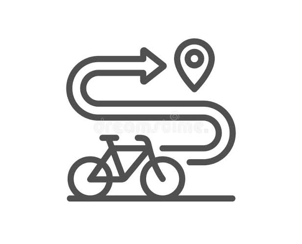

¿Quiénes somos?
Somos Rueda Libre, un equipo de apasionados por la vida sobre dos ruedas. Nos dedicamos a conectar a locales y viajeros con la ciudad de una forma activa, ecológica y divertida, ofreciendo bicicletas de excelente calidad para que disfrutes cada kilómetro del camino.

Nuestros servicios
- Alquiler por horas o días: Bicicletas urbanas, de montaña (MTB) y eléctricas que se adaptan a tu ritmo.
- Tours guiados: Recorridos por los puntos más emblemáticos e históricos de la ciudad. Ver los planes disponiblesrecorridos
- Equipamiento completo: Cada alquiler incluye casco, candado de alta seguridad y mapa de ciclorrutas sin costo adicional.
- Asistencia en ruta: Soporte mecánico rápido si llegas a tener cualquier imprevisto durante tu viaje.

¿Cómo alquilar?
¡Es súper fácil y te toma menos de 5 minutos!
- Elige tu bici: Selecciona el modelo ideal según tu plan del día.
- Presenta tu documento: Solo necesitas una identificación oficial vigente (cédula o pasaporte).
- Define el tiempoAlquila por horas o por días completos.
- ¡A rodar!: Ajustamos la altura del sillín a tu medida y estarás listo para salir a explorar.
Encuentranos
Nuestra tienda principal está ubicada en la Calle 10 #43E-20, El Poblado (a solo dos cuadras de la estación del Metro). Abrimos todos los días, de lunes a domingo, desde las 8:00 a. m. hasta las 8:00 p. m. ¡Te esperamos!
Puedes ver nuestra ubicacion exacta en:
Google mapsPuedes contactarnos via gmail
GMAILConsulta nustros precios en la pagina de tarifas